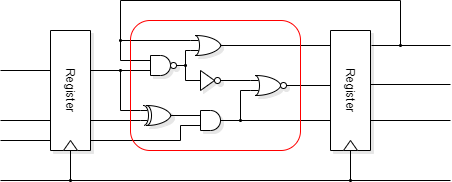

In practice clock arrival times at all flip-flops in a
synchronous domain have to be ‘close enough’
that every flip-flop is committed to any changes before any flip-flop
output changes are perceived. This implies ‘simultaneity’
of clock arrival. Any difference in arrival times is referred to as
‘clock skew’ and there is significant effort
expended in minimising it.
Note that the absolute latency of
clock distribution is not relevant: the clock is an ever-repeating
waveform. It is any differences in latency (skew) which can
cause problems.
These properties mean that clock signals require (electrical) buffering … but that's okay providing the skew is still kept small. Because the signal is distributed over an area of a chip this usually is in the form of a clock tree.
The clock tree needs to be well balanced, taking into consideration:
This is a big task for ‘Place and Route’: fortunately, tools will help with this.
The classic ‘H-tree’ structure is one method of trying to distribute a clock across a chip with minimal skew. Note, all paths are (notionally) the same length.
Modern FPGAs have a dedicated set of clock distribution networks built onto the chip which deliver clock signals to all flip-flops with minimal skew. There are typically a small number (e.g. four) of these networks so that a number of different clocks may be used. These networks can only be used for clocking flip-flops.
Another signal with potentially very high fan-out is reset Reset activation is not normally a timing problem because reset will be present for some time. The removal of reset can be a problem though. Imagine reset being removed in one part of a state machine but not quite making it to another. This could cause the machine to enter an illegal state. It is often necessary to synchronise an otherwise asynchronous reset to prevent this.
Timing closure is, basically, making the logic fit within the desired clock period.
A HDL design first concentrates on the logic functionality of the system. Timing closure is the subsequent process of persuading the synthesized logic to operate correctly within the desired clock period under all circumstances. (It can be a major phase of a real design!)
Functional simulation can give cycle accurate speed measurements but not, directly, the critical path. If the simulation is run on a back-annotated† netlist extracted from a synthesized design then it can indicate whether a particular sequence will fail at a particular clock speed. This is a reasonable guide but is not reliable unless either the critical path is known (and exercised) or the simulation is exhaustive since it is probable that not every switching path will be exercised.
†The behavioural description has been converted into a ‘gate’ model including estimated delays.
Example: a ripple carry adder. Simulation with random inputs is unlikely to find the slowest case, when a carry propagates across the whole width.
This can be difficult to determine, exactly. It is set by the critical path. From a HDL source this requires at least technology mapping into gates. Accuracy requires knowledge of gate strengths, wire load and layout detail. However it is cost effective to estimate timing early to check that the implementation strategy is feasible. Even pre-layout the tools usually give an estimate of the wire loads to yield a more realistic result.
In this case ‘static’ means independent of input state. The delays through each combinatorial path can be summed and compared with the design objective. This reveals the critical path or the ‘slack’ in all logic paths. In the latter case ‘negative slack’ will reveal where the logic is too slow.
The great advantage of static analysis is its low computational complexity. The disadvantage is that the ‘critical path’ may be a false path, i.e. one whose switching sequence cannot occur in reality.
In general STA will identify anything which is significantly bad at low cost.
Estimating the timing of synthesized logic is not a singular operation. At this point there is the need to take into consideration the triumvirate PVT.
In addition to these factors an allowance is needed for clock jitter: fluctuations in the clock period over a short time. This can be caused by ‘hunting’ from a PLL clock generator (q.v.) for example. There may be something like a 5%-10% allowance in the period for this.
Finally a bit of extra time is typically allowed for uncertainty and factors which might have been overlooked or misjudged. Designers are still fallible and it is as well to acknowledge that too!
No, of course it doesn't; where would the fun be in that?
Seriously, what is ‘fast enough’? In many applications there will be a real-time constraint to be met but exceeding it brings no additional benefit. In other applications (e.g. microprocessors) any performance increase is to be seized.
How close are you to your target? If you're ‘miles off’ you need to restructure your architecture to increase parallelism. This may be done by:
If close to target you might be able to identify and recode critical modules.
Tools can also be instructed to optimise for certain criteria, such as speed, power, area … Normally gains in one category are paid for in others.
Many cells come in families with various drive strengths. Increasing the drive will speed up an output (and slow the input, and probably cost power).
It may be possible to use different cell families to improve performance. E.g.
The process may need repeating. After the wiring is factored in things (probably) have slowed down. Buffers may be added which increase the latency but speed up edges.
Hopefully this process converges on something acceptable.
Optimise early to avoid wasting effort on ‘hopeless’ designs. Layout and extraction all take time and more accurate modelling also takes longer.
Back/up to timing & clocking.
Forwards to clock domains.